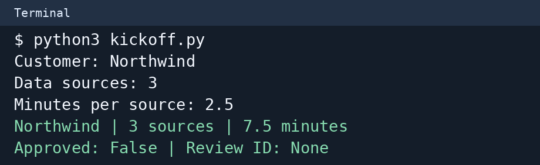

Variables, data types & strings
Open your python-practice folder. Imagine our first OmniGuard customer has handed us three data sources to connect. We need a quick estimate and a record of whether the work is approved. Let’s build the little tool that prints that summary.
1. Start with five values
Create kickoff.py. Before we ask anyone to type anything, decide what kind of value each field should hold.
| Type | What goes in the kickoff note |
|---|---|
str | customer = "Northwind" is text. |
int | source_count = 3 is a whole-number count. |
float | minutes_per_source = 2.5 can hold half a minute. |
bool | approved = False records a yes-or-no decision. |
NoneType | review_id = None means a review ID hasn’t been assigned yet. |
Read source_count = 3 from right to left. Take the value 3 and give it the name source_count. Put quotes around the customer name. Leave False and None unquoted.
2. Watch what happens when you type 3
Drop these two lines into kickoff.py and save. Run py -3 kickoff.py on Windows or python3 kickoff.py on Mac or Linux.
raw_count = input("Data sources: ")
print(type(raw_count).__name__)At the prompt, type 3. Pause and guess the output. The terminal prints str. input() gives us text, so we use int(raw_count) before doing maths. Similarly, float("2.5") gives the number 2.5 and str(3) gives the text "3".
Here’s a common bug you can spot by reading the types. "2" + "3" gives "23". int("2") + int("3") gives 5.
3. Build it with me
Replace those two lines with the program below. Save and run the same command. When it asks, type Northwind, 3 and 2.5. Before pressing Enter on the last input, guess the total.
customer = input("Customer: ").strip()
source_count = int(input("Data sources: "))
minutes_per_source = float(input("Minutes per source: "))
approved = False
review_id = None
estimated_minutes = source_count * minutes_per_source
print(f"{customer} | {source_count} sources | {estimated_minutes:.1f} minutes")
print(f"Approved: {approved} | Review ID: {review_id}")
.strip()trims extra spaces from the customer name.int()andfloat()turn the other two inputs into numbers.- Python calculates
3 * 2.5before printing. Theftells Python to fill each pair of braces with a value.:.1fdisplays one decimal place. Falserecords that approval hasn’t been received.Nonerecords that there’s no review ID. Changing the estimate doesn’t change either field.
4. Change it, break it, fix it
Run it for Acme with 4 sources at 7.5 minutes each. Now add a line that shows Estimate in hours: 0.50. Use the value you already calculated.
Check your answer
print(f"Estimate in hours: {estimated_minutes / 60:.2f}")Now type 3.0 at Data sources. Look for ValueError at the start of the last line. That input is decimal text, so int() rejects it. Run again with 3. We’ll handle invalid input in a later lesson.
Two quick checks. If your output shows {customer}, check the f before the quote. If you try bool("False"), it returns True because the text isn’t empty.
5. Reuse it in the eight projects
Pick one drill. Write a new file without copying the kickoff code. Predict the output, then run it and compare.
Show all eight project drills
- Capstone Project 01: OmniGuard: Secure AI Integration
Change the customer toAcme, sources to4and minutes per source to7.5. Predict30.0 minutesbefore running it. - Capstone Project 02: AuditMesh: Multi-Agent Compliance System
Store a case ID as"007", a check count as3and a review ID asNone. Print007 | 3 checks | None. - Project 03: Self-Host and Fine-Tune an LLM on Company Infrastructure
Read requests per second as a decimal. Enter12.5and print12.5 requests/sec. - Project 04: Run an LLM on Mobile Devices
Read battery use as a decimal. Enter2.5and printBattery used: 2.5%. - Project 05: Multimodal Company Artefact Intelligence at Scale
Read a document count as a whole number. Enter4and print4 documents. - Project 06: Enterprise Lead Management System
Keep lead ID"0042"as text. Read2as an integer and print0042 | 2 follow-ups. - Project 07: AI Receptionist System
Setcall_answered = Falseandbooking_id = None. Print both values with an f-string. - Project 08: AI Voice Productivity SaaS: From Desktop App to Paid Product
Multiply3voice clips by12.5seconds per clip. PrintTotal: 37.5 seconds.
6. Say it out loud
Imagine an interviewer hands you "007" and calls it a case ID. Which type would you use and why? Then explain what happens when someone types 0 or oops as the source count.
Compare your reasoning
Keep the ID as text. Converting it to an integer drops the leading zeros. 0 converts successfully, so ask whether zero sources is allowed. oops fails at conversion. Test a normal input, zero and invalid text.
Google’s mock coding interview demonstrates explaining your thinking. Amazon’s interview guide includes testing edge cases.